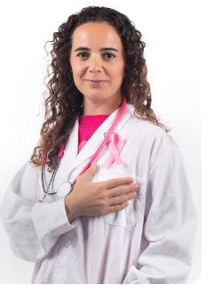

Câncer de Mama: Diagnóstico Precoce Salva Vidas
O câncer de mama é a neoplasia maligna mais frequente entre as mulheres no Brasil e em todo o mundo, representando uma séria ameaça à saúde feminina. Em Recife, assim como nas demais capitais brasileiras, a prevenção, o diagnóstico precoce e o acesso aos serviços especializados são pilares essenciais no enfrentamento dessa doença.
Importância da Prevenção e Detecção Precoce
A prevenção do câncer de mama passa por cuidados com o estilo de vida, alimentação equilibrada, prática de atividades físicas e redução do consumo de álcool. No entanto, o fator mais decisivo na redução da mortalidade por câncer de mama é a detecção precoce. Quando identificado em estágio inicial, as chances de cura podem ultrapassar 95%, permitindo tratamentos menos invasivos e com maior eficácia.
- Autoexame das mamas: deve ser realizado mensalmente, preferencialmente uma semana após o término da menstruação.
- Consultas regulares ao ginecologista ou mastologista: mesmo sem sintomas aparentes, é essencial manter acompanhamento médico periódico.
- Mamografia: exame indicado para mulheres a partir dos 40 anos, sendo disponibilizado gratuitamente pelo Sistema Único de Saúde (SUS) para mulheres entre 50 e 69 anos como parte da estratégia de rastreamento.
Sinais de Alerta
Mulheres devem estar atentas a sinais como nódulos na mama ou axila, alterações na pele da mama (vermelhidão, retrações), secreção anormal pelos mamilos ou mudanças no formato da mama. Em qualquer um desses casos, é fundamental buscar avaliação médica imediata.
Onde Buscar Atendimento em Recife
A Prefeitura do Recife, por meio da Secretaria Municipal de Saúde, oferece diversos serviços gratuitos voltados à saúde da mulher. A rede pública conta com Unidades de Saúde da Família (USFs), Policlínicas e Centros de Diagnóstico especializados no acolhimento, rastreamento e tratamento do câncer de mama.
- Consultas ginecológicas e com mastologista
- Solicitação e realização de mamografia
- Exames de ultrassonografia mamária e biópsia, conforme indicação
- Encaminhamento para unidades especializadas em oncologia, quando necessário
- Acolhimento psicossocial para mulheres em tratamento
Postos com Atendimento Especializado
- Centro de Diagnóstico por Imagem Mário Melo (CDI): Localizado no bairro da Boa Vista, oferece mamografia e ultrassonografia mamária mediante agendamento via regulação do SUS.
- Hospital da Mulher do Recife (HMR): Referência em saúde da mulher, oferece atendimento integral, incluindo exames de rastreamento, diagnóstico e início do tratamento oncológico.
- Policlínicas Municipais: como a Policlínica Lessa de Andrade (Madalena), realizam atendimento ginecológico e encaminhamento para exames de imagem.
Para saber qual é o posto mais próximo da sua residência que oferece esses serviços, você pode utilizar a ferramenta de geolocalização ou realizar uma busca filtrada por bairro e especialidade aqui no site InfoSaúde Recife.
Agendamento e Acesso
Os exames e consultas são agendados diretamente nas unidades de saúde de referência, mediante apresentação do cartão SUS, documento de identidade e, em alguns casos, encaminhamento médico. É importante manter os dados cadastrais atualizados junto ao SUS para facilitar o agendamento.
Outubro Rosa e Ações Educativas
Todos os anos, durante o mês de outubro, a Prefeitura do Recife promove o Outubro Rosa, uma campanha de conscientização que inclui mutirões de mamografia, palestras educativas e ações itinerantes nos bairros com menor cobertura de exames. Essas ações reforçam o papel da prevenção e mobilizam a sociedade para o cuidado com a saúde da mulher.
Compromisso com a Vida
O câncer de mama pode ser superado quando enfrentado com informação, apoio e acesso à saúde. O InfoSaúde Recife tem como missão aproximar a população dos serviços públicos de saúde, fortalecendo o vínculo entre cidadania, bem-estar e prevenção. Busque atendimento, tire dúvidas e compartilhe essa informação com outras mulheres — cuidar da saúde também é um ato de amor.
Vacinação: Proteja a Si e aos Outros

As vacinas disponíveis nos postos de saúde são seguras, gratuitas e salvam milhões de vidas todos os anos. Mantenha seu cartão de vacinação atualizado, principalmente em relação à gripe, hepatite, tétano e covid-19. Crianças, gestantes e idosos merecem atenção especial.
Saúde Mental: Não é Frescura, é Prioridade

Ansiedade, depressão e estresse são condições reais e precisam de cuidado. Conversar com profissionais da saúde mental, buscar apoio familiar e equilibrar rotina com lazer, descanso e atividade física fazem parte da prevenção e do tratamento.